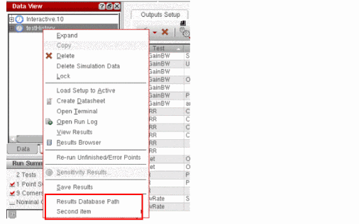

axlGetDataViewHistoryUserMenu
axlGetDataViewHistoryUserMenu(t_sessionNamex_historyHandle) =>l_menuStructItems
Description
This callback function is called when you right-click a history item in the History tab of the Data View assistant. You can override this function in .cdsinit to add customized menu items in the popup menus of the history items.
Arguments
Value Returned
Examples
You can override this callback function to add customized menu items to retrieve details of simulation directories or the results database files.
The following example shows how you can add a new menu item Simulation Directory Name to print the location of results directory for the given history. It also adds another dummy menu list with two submenus.
define( axlGetDataViewHistoryUserMenu( axlSession historySDB) val=strcat("Result DB for '" axlGetHistoryName(historySDB) "' is at " axlGetHistoryResults(historySDB)) list(list("Results Database Path" "printf(\"%L\" val)" "false") ; 'false' enables the menu item list("Second item" list(
list("first submenu item" "callbackProcedure1" "true")
; 'true' disables the menu item list("second submenu item" "callbackProcedure2" "false")))
))
This code adds new menu commands to the pop-up menu of history items in the Data View pane.

Return to top